VXU
about me
work
Control Room
Control Room is a desktop application that enables businesses to measure their
performance metrics and monitor the statuses of their systems through dashboards.

01. the goal
My mission for Control Room was to use my creativity to simplify the UI flow so that
clients could understand the performance of their business on comprehensive dashboards.
02. who was it for?
Large banks such as ANZ and NAB using Accenture’s Automatic Ticket Resolver (ATR).
ATR is a machine learning platform which automatically solves issues that are often given
to customer service desks. Control room was used to maintain the automation process and
monitor ATR.
03. the problem
1. The original platform was hard to navigate because it reflected the complexity of ATR’s system
2. There was little design elements, as it was implemented without a designer
3. Dashboard pages had repetitive data and were overloaded with information
4. Users had difficulty understanding their business performance
04. the solution
Creating the navigation
I created a sitemap that categorised the pages by system so that pages were digestible and users could
effortlessly find the information they were looking for.
Redesigning the interface
I opted for a colour blocking theme with the blue to remain consistent with Accenture’s
pre-existing colours as Control Room was to be deployed as part of a suite.
I used white as a neutral background to offset the block colours used throughout the pages
and minimise the look of the comprehensive dashboards. Green and red block colours were used
as status buttons to indicate whether the system has failed or is currently active.
Organising contents to improve discoverability
I reorganised repetitive data into containers to represent each system so that information
could be easily analysed by the user. Corners of containers were rounded to give a modern look
and to indicate the start and end of the page as users scroll.
Guiding users on technical information
During usability testing, I discovered a pain point that users found was that they could
not understand the platform as it required a level of technical knowledge. Therefore, I built
on-hover tool-tips to help provide additional information.
05. Reflections and takeaways
I had a lot of fun with this project because I was given the opportunity to learn new
skills like coding the front end of the application. However because the timeline was short,
I skipped parts of the design process such as low fidelity designs and market research. In
the future, I would like to conduct more usability testing, gain more feedback and personalise
the experience more businesses.
Next
Previous